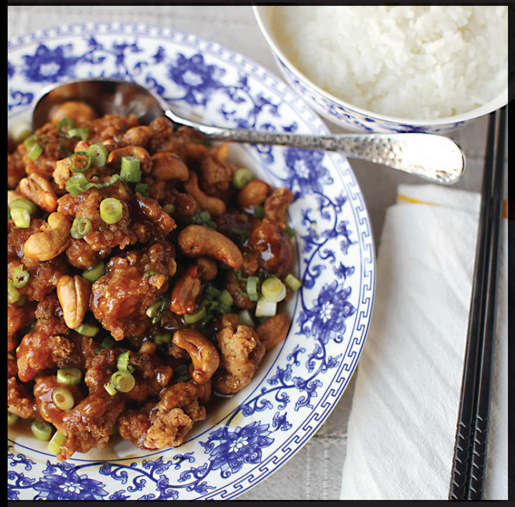

SPRINGFIELD-STYLE CASHEW CHICKEN
|
Yield Serves 4 to 6 |
Active Time 45 minutes Total Time 1 hour or up to several days |
The very first battered, fried, and sauced Chinese American dish might be from Springfield, Missouri, where Wing Yin Leong, a Chinese immigrant and American World War II hero, created Springfield-Style Cashew Chicken in late 1963, shortly after opening his restaurant Leong’s Tea House, a full eight years before General Ching’s appeared in New York. According to Leong, the dish was an attempt to cater to the local taste for fried chicken. Rather than serving it with mashed potatoes, he served it with rice. Instead of a roux-thickened chicken gravy, he thickened his with starch and flavored it with oyster sauce, topping the whole thing off with a handful of scallions and cashews. Leong passed away in July 2020, but his cashew chicken has become a staple in Springfield, served at Chinese restaurants and school cafeterias alike.
David Leong (the American name that Wing Yin adopted) has been very generous with his recipe, and you can easily find it online. The chicken itself is essentially southern-style American fried chicken, with a milk- and egg-based dredging mixture that calls for regular all-purpose flour flavored with garlic powder, cayenne, and white pepper.
The recipe in this book is partially inspired by his recipe, but it implements a few of the techniques and tips I’ve picked up through my other experiments and research in Chinese American fried chicken, as well as some personal preferences in my southern-style fried chicken (such as copious amounts of black pepper in place of the white). I strongly urge you to look up Leong’s original recipe and compare it to this one, then make your own calls as to what flavors and techniques you want to incorporate to make it your own.

INGREDIENTS
For the Marinade and Chicken:
1 large egg
1 tablespoon (15 ml) light soy sauce or shoyu
2 tablespoons (30 ml) 80-proof vodka
¼ cup (60 ml) buttermilk or whole milk
¼ teaspoon (1 g) baking soda
⅓ cup (2 ounces/60 g) all-purpose flour
½ teaspoon (1 g) freshly ground black pepper
½ teaspoon (1 g) garlic powder
¼ teaspoon (0.5 g) cayenne
1 teaspoon (5 ml) roasted sesame oil
1 teaspoon (3 g) chicken bouillon powder or salt
1 pound (450 g) boneless, skinless chicken thighs, cut into ½- to ¾-inch chunks
For the Sauce:
1½ cups (360 ml) homemade or store-bought low-sodium chicken stock or water
¼ cup (60 ml) oyster sauce
2 tablespoons (30 ml) light soy sauce
1 teaspoon (4 g) sugar
½ teaspoon (1 g) freshly ground black or white pepper
½ teaspoon (5 ml) roasted sesame oil
1 teaspoon (2.5 g) minced fresh ginger (about ¼-inch segment)
1½ tablespoons (4.5 g) cornstarch
2 tablespoons (30 ml) water
For the Dry Coating:
½ cup (2.5 ounces/70 g) all-purpose flour
½ cup (2 ounces/60 g) cornstarch
½ teaspoon (3 g) baking powder
1½ teaspoons (3 g) freshly ground black pepper
1 teaspoon (2 g) garlic powder
¼ teaspoon (0.5 g) cayenne
½ teaspoon (3 g) kosher salt
To Finish:
2 quarts (2 l) peanut, rice bran, or other neutral oil
½ cup (75 g) raw cashews
2 scallions, sliced
Steamed rice, for serving
DIRECTIONS
1 For the Marinade and Chicken: Whisk together the egg, soy sauce, vodka, buttermilk, baking soda, flour, black pepper, garlic powder, and cayenne in a large bowl. Add the chicken and turn it with your fingers to coat thoroughly. Set aside while you prepare the remaining ingredients or marinate in the refrigerator up to overnight before continuing.
2 For the Sauce: Combine the chicken stock, oyster sauce, soy sauce, sugar, pepper, sesame oil, and ginger in a small saucepan. Combine the cornstarch and water in a small bowl and stir with a fork until the cornstarch is dissolved. Add to the saucepan and stir to combine. Cook the sauce over medium heat, stirring, until it boils, reduces, and thickens to the point where it can easily coat the back of a spoon, 5 to 10 minutes total. Set the sauce aside and keep warm.
3 For the Dry Coating: Combine the flour, cornstarch, baking powder, black pepper, garlic powder, cayenne, and salt in a large bowl. Whisk until homogenous.
4 To Finish: Heat the oil in a wok over high heat until it registers 350°F (175°C) on an instant-read thermometer, then adjust the heat to maintain the temperature. Drizzle a few tablespoons of the chicken marinade into the dry coating mixture and work it in with your fingertips to form little clumps of flour. Working one piece at a time, transfer the chicken from the marinade to the dry coating mixture, tossing after each addition to coat the chicken. When all the chicken has been added to the dry coating, toss it with your hands, pressing the dry mixture onto the chicken so it adheres and making sure that every piece is coated thoroughly.
5 Lift the chicken one piece at a time, shake off excess coating, and carefully lower the chicken into hot oil (do not drop it). Once all the chicken is added, cook, agitating with long chopsticks or a spider and adjusting the heat to maintain a temperature of 300° to 325°F (150° to 160°C), until the chicken is cooked through and very crispy, about 4 minutes. Remove the chicken with a spider and transfer it to a paper-towel-lined bowl to drain.
6 Optional Double-Fry, for Extra-Crispy Results: Let the chicken cool completely on the countertop, or let it rest uncovered in the fridge for up to two nights. Meanwhile, strain the oil and discard any solids. Reheat the oil to 375°F (190°C), add the rested chicken, and refry until crispy, about 2 minutes. Remove the chicken with a spider and transfer it to a paper-towel-lined bowl to drain.
7 Add the cashews to the oil and fry until pale golden brown, about 45 seconds (the cashews will continue to darken after you remove them from the oil; do not overcook). Transfer to the bowl with the chicken.
8 Transfer the chicken and cashews to a serving platter. Ladle the gravy on top, sprinkle with the scallions, and serve immediately with rice.